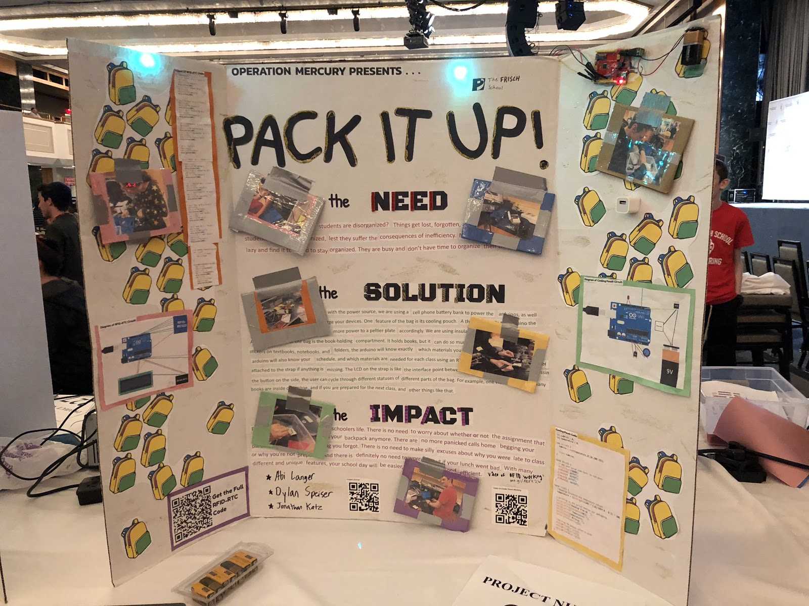

|

|

|

|
|
This is the Basic wiring of the RFID sensor and LCD screen.
|
This is me soldering up the RFID sensor and LCD screen.
|
This is the wiring before we cleaned it up and did wire management.
|
This is me Programing the RFID sensor to read the number and map it to a certain RFID tag.
|
|
|

|

|
|
|
This is me testing the RFID sensor.
|
This is me building a brace to protect the electronics in the bag.
|
This is what the electronics box looked like going into the backpack.
|
This is the second iteration of the electronics pouch.
|
|

|

|
|
This is the poster describing the project and its uses.
|
This is the fully realised version of the backpack.
|
Abstract
Have you ever noticed that students are disorganized? Things get lost, forgotten, and thrown away. High school students need to be organized, lest they suffer the consequences of inefficiency. Many high school students are lazy and find it too hard to stay organized. They are busy and don’t have time to organize their things.
Introducing, Pack It Up!. With many different and unique features, your school day will be easier, more organized, and efficient.
Beginning with the power source, we are using a cell phone battery bank to power the arduinos, as well as leaving one USB port free to charge your devices. This solution is easy and cost effective.
One feature of the bag is its cooling pouch. A thermistor tells the arduino the temperature, and the arduino applies more power to a peltier plate accordingly. We are using insulating material to keep the cold in.
Another feature of the bag is the book-holding compartment. It holds books, but it can do so much more! By placing RFID stickers on textbooks, notebooks, and folders, the arduino will know exactly which materials you have inside of the bag. The arduino will also know your schedule, and which materials are needed for each class, and will notify you on the LCD screen attached to the strap if anything is missing.
The LCD on the strap is like the interface point between the backpack and the user. By pressing the button on the side, the user can cycle through different statuses of different parts of the bag. For example, one view shows the temperature and status of the cooler pouch, one view shows how many books are inside of the bag, and if you are prepared for the next class, and other things like that.
Code
Link to Github
#include <Wire.h>
#include <LiquidCrystal_I2C.h>
#include <AddicoreRFID.h>
#include <SPI.h>
#include <DS3231.h>
#include <Wire.h>
#define uchar unsigned char
#define uint unsigned int
LiquidCrystal_I2C lcd(0x27, 16, 2);
DS3231 Clock;
uchar fifobytes;
uchar fifoValue;
AddicoreRFID myRFID; // create AddicoreRFID object to control the RFID module
const int chipSelectPin = 10;
const int NRSTPD = 5;
int x = 0;
int classhour = 8;
int classminute = 50;
int screen = 0;
int clocktime = 0;
int clocksecond;
int tenbeforem;
int tenbeforeh;
int tuesday[] = {0 , 1, 5, 3, 7, 2, 6, 0};
boolean a = false;
boolean b = false;
boolean c = false;
boolean d = false;
boolean e = false;
boolean f = false;
boolean g = false;
boolean once = false;
boolean coolling = false;
boolean screen2 = true;
boolean screen0 = true;
String days[] = {"sunday", "monday", "tuesday", "wednsday", "thursday", "friday", "saturday"};
String classes[] = {"talmud", "history", "engineering", "lunch", "hebrew", "english", "bio", "math", "talmud"};
String book;
bool Century = false;
bool h12;
bool PM;
byte ADay, AHour, AMinute, ASecond, ABits;
bool ADy, A12h, Apm;
byte year, month, date, DoW, hour, minute, second;
//Maximum length of the array
#define MAX_LEN 16
void setup() {
rfid_setup();
rtc_setup();
}
void loop() {
rfid_loop();
rtc_loop();
screens();
Serial.println(screen);
}
void booksneeded(String x) {
if (x == "talmud" && g == false) {
lcd.clear();
lcd.print("YNY gemara");
delay_button(1000);
} else if (x == "talmud" && g) {
lcd.clear();
lcd.print("YHY gemara");
delay_button(1000);
}
if (x == "history" && d == false) {
lcd.clear();
lcd.print("YNY history");
delay_button(1000);
} else if (x == "history" && d) {
lcd.clear();
lcd.print("YHY history");
delay_button(1000);
}
if (x == "engineering" && c == false) {
lcd.clear();
lcd.print("YNY engineering");
delay_button(1000);
} else if (x == "engineering" && c) {
lcd.clear();
lcd.print("YHY engineering");
delay_button(1000);
}
if (x == "lunch") {
lcd.clear();
lcd.print("YH lunch");
delay_button(1000);
}
if (x == "hebrew" && f == false) {
lcd.clear();
lcd.print("YNY hebrew");
delay_button(1000);
} else if (x == "hebrew" && f) {
lcd.clear();
lcd.print("YHY hebrew");
delay_button(1000);
}
if (x == "english" && a == false) {
lcd.clear();
lcd.print("YNY english");
delay_button(1000);
} else if (x == "english" && a) {
lcd.clear();
lcd.print("YHY english");
delay_button(1000);
}
if (x == "bio" && b == false) {
lcd.clear();
lcd.print("YNY bio");
delay_button(1000);
} else if (x == "bio" && b) {
lcd.clear();
lcd.print("YHY bio");
delay_button(1000);
}
if (x == "math" && e == false) {
lcd.clear();
lcd.print("YNY math");
delay_button(1000);
} else if (x == "math" && e) {
lcd.clear();
lcd.print("YHY math");
delay_button(1000);
}
}
void current_class(String y){
lcd.clear();
Serial.println(y);
lcd.print(y);
}
void next_class(String y){
lcd.clear();
lcd.print(classhour);
lcd.print(":");
lcd.print(classminute);
delay_button(1000);
lcd.clear();
Serial.println(y);
lcd.print(y);
delay_button(1000);
}
void schedual() {
if (classminute > 59) {
classminute -= 60;
classhour += 1;
}
if(Clock.getHour(h12, PM) > classhour || (Clock.getHour(h12, PM) == classhour && Clock.getMinute() > classminute)){
/* x++;
if(x == 3){
classminute += 45;
} else{
classminute += 43;
}
}
if (Clock.getHour(h12, PM) == classhour && Clock.getMinute() == classminute) {*/
if(x == 3){
classminute += 45;
} else{
classminute += 43;
}
x++;
if (x > 8) {
x = 0;
classhour = 8;
classminute = 50;
}
}
}
void screens(){
if (digitalRead(3) == HIGH)
{
delay(500);
screen ++;
Serial.println(screen);
}
if(screen > 5){
screen = 0;
}
if(screen == 0){
delay_button(1000);
lcd.clear();
ReadDS3231();
}
if(screen == 1){
lcd.clear();
if(Clock.getDoW() == 1){
booksneeded(classes[x]);
}
if(Clock.getDoW() == 2){
booksneeded(classes[tuesday[x]]);
}
}
if (screen == 2){
screen == 3;
}
if(screen == 3){
if(a){
Serial.println("\nEnglish Notebook\n");
lcd.clear();
lcd.println("English Notebook");
delay_button(1000);
}
if(b){
Serial.println("\nScience Notebook\n");
lcd.clear();
lcd.println("Science Notebook");
delay_button(1000);
}
if(c){
Serial.println("\nEngineering Notebook\n");
lcd.clear();
lcd.setCursor(0, 0);
lcd.println("Engineering");
lcd.setCursor(0, 1);
lcd.println ("Notebook");
delay_button(1000);
}
if(d){
Serial.println ("History Notebook");
lcd.clear();
lcd.println("History Notebook");
delay_button(1000);
}
if(e){
Serial.println ("Math Notebook");
lcd.clear();
lcd.println("Math Notebook");
delay_button(1000);
}
if(f){
Serial.println ("Hebrew Notebook");
lcd.clear();
lcd.println("Hebrew Notebook");
delay_button(1000);
}
if(g){
Serial.println ("Gemara Notebook");
lcd.clear();
lcd.println("Gemara Notebook");
delay_button(1000);
}
if (a /*== false*/ && b /*== false*/ && c/*== false*/ && d/*== false*/ && e /*== false*/ && g /*== false*/)
{
lcd.clear();
Serial.println("ALL HERE");
lcd.print("ALL HERE");
delay_button(1000);
}
screen ++;
}
if(screen == 4){
if(Clock.getDoW() == 1){
x--;
current_class(classes[x]);
x++;
}
if(Clock.getDoW() == 2){
x--;
current_class(classes[tuesday[x]]);
x++;
}
}
if(screen == 5){
if(Clock.getDoW() == 1){
next_class(classes[x]);
}
if(Clock.getDoW() == 2){
next_class(classes[tuesday[x]]);
}
}
}
void delay_button(int z){
for(int i = 0; i < z; i++){
if (digitalRead(3) == HIGH)
{
delay(500);
screen ++;
Serial.println(screen);
}
delay(1);
}
}
void blinking(){
for(int i = 0; i < 10; i++){
lcd.noBacklight();
delay(200);
lcd.backlight();
delay(200);
}
}
void rfid_setup(){
// start the SPI library:
SPI.begin();
pinMode(chipSelectPin, OUTPUT); // Set digital pin 10 as OUTPUT to connect it to the RFID /ENABLE pin
digitalWrite(chipSelectPin, LOW); // Activate the RFID reader
pinMode(NRSTPD, OUTPUT); // Set digital pin 10 , Not Reset and Power-down
digitalWrite(NRSTPD, HIGH);
myRFID.AddicoreRFID_Init();
Serial.begin(9600); // RFID reader SOUT pin connected to Serial RX pin at 9600bps
lcd.begin();
lcd.backlight();
lcd.clear();
pinMode(3, INPUT); // button
//blinking light
pinMode(8, OUTPUT);
}
void rfid_loop(){
//Serial.println(a);
if (a /*== false*/ && b /*== false*/ && c/*== false*/ && d/*== false*/ && e /*== false*/ && g /*== false*/ && once == false)
{
lcd.clear();
Serial.println("ALL HERE");
if (screen == 0)
{
lcd.setCursor(0, 1);
lcd.print("ALL HERE");
}
digitalWrite(8, HIGH);
once = true;
}
else
{
uchar i, tmp, checksum1;
uchar status;
uchar str[MAX_LEN];
uchar RC_size;
uchar blockAddr; //Selection operation block address 0 to 63
String mynum = ""
str[1] = 0x4400;
//Find tags, return tag type
status = myRFID.AddicoreRFID_Request(PICC_REQIDL, str);
if (status == MI_OK)
{
Serial.println("Tag detected");
/* Serial.print("Tag Type:\t\t");
uint tagType = str[0] << 8;
tagType = tagType + str[1];
switch (tagType) {
case 0x4400:
Serial.println("Mifare UltraLight");
break;
case 0x400:
Serial.println("Mifare One (S50)");
break;
case 0x200:
Serial.println("Mifare One (S70)");
break;
case 0x800:
Serial.println("Mifare Pro (X)");
break;
case 0x4403:
Serial.println("Mifare DESFire");
break;
default:
Serial.println("Unknown");
break;
}*/
}
//Anti-collision, return tag serial number 4 bytes
status = myRFID.AddicoreRFID_Anticoll(str);
if (status == MI_OK)
{
checksum1 = str[0] ^ str[1] ^ str[2] ^ str[3];
Serial.print("Tag number:\t");
Serial.print(str[0]);
Serial.print(" , ");
Serial.print(str[1]);
Serial.print(" , ");
Serial.print(str[2]);
Serial.print(" , ");
Serial.println(str[3]);
// Should really check all pairs, but for now we&aposll just use the first
if (str[0] == 85 && str[1] == 200 ) //You can change this to the first byte of your tag by finding the card&aposs ID through the Serial Monitor
{
Serial.println("\nEnglish Notebook\n");
if (screen == 0)
{
lcd.clear();
lcd.setCursor(0, 0);
lcd.println("English Notebook");
}
a = !a;
once = false;
digitalWrite(8, LOW);
} else if (str[0] == 229) { //You can change this to the first byte of your tag by finding the card&aposs ID through the Serial Monitor
Serial.println("\nScience Notebook\n");
if (screen == 0)
{
lcd.clear();
lcd.println("Science Notebook");
}
b = !b;
once = false;
digitalWrite(8, LOW);
} else if (str[0] == 101 ) {
Serial.println("\nEngineering Notebook\n");
if (screen == 0)
{
lcd.clear();
lcd.setCursor(0, 0);
lcd.println("Engineering");
lcd.setCursor(0, 1);
lcd.println ("Notebook");
}
c = !c;
once = false;
digitalWrite(8, LOW);
} else if (str[0] == 53 && str[1] == 4 ) {
Serial.println ("History Notebook");
if (screen == 0)
{
lcd.clear();
lcd.println("History Notebook");
}
d = !d;
once = false;
} else if (str[0] == 85 && str[1] == 227 ) {
Serial.println ("Math Notebook");
if (screen == 0)
{
lcd.clear();
lcd.println("Math Notebook");
}
e = !e;
once = false;
digitalWrite(8, LOW);
// } else if (str[0] == 53 && str[1] == 40 ) {
// Serial.println ("Hebrew Notebook");
// if (screen == 0)
// {
// lcd.clear();
// lcd.println("Hebrew Notebook");
// }
// f = !f;
// once = false;
// digitalWrite(8, LOW);
} else if (str[0] == 69) {
Serial.println ("Gemara Notebook");
if (screen == 0)
{
lcd.clear();
lcd.println("Gemara Notebook");
}
g = !g;
once = false;
digitalWrite(8, LOW);
} else {
if (screen == 0)
{
lcd.clear();
lcd.println("waiting...");
}
}
Serial.println();
delay(1000);
}
myRFID.AddicoreRFID_Halt(); //Command tag into hibernation
}
/* if (screen == 0) {
//lcd.setCursor(0, 0);
//lcd.print("");
lcd.setCursor(0, 1);
lcd.print("----SCREEN 1----");}
if (screen == 1) {
lcd.setCursor(0, 0);
lcd.print("--**--TEST--**--");
lcd.setCursor(0, 1);
lcd.print("----SCREEN 2----");
} else if (screen == 2) {
lcd.setCursor(0, 0);
lcd.print("--**--TEST--**--");
lcd.setCursor(0, 1);
lcd.print("**--SCREEN 3--**");
} else if (screen == 3) {
lcd.setCursor(0, 0);
lcd.print("**----TEST----**");
lcd.setCursor(0, 1);
lcd.print("-**--SCREEN 4-**-");
}*/
}
void rtc_setup(){
Wire.begin();
Clock.setSecond(55);//Set the second
Clock.setMinute(49);//Set the minute
Clock.setHour(9); //Set the hour
Clock.setDoW(2); //Set the day of the week
Clock.setDate(10); //Set the date of the month
Clock.setMonth(4); //Set the month of the year
Clock.setYear(18); //Set the year (Last two digits of the year)
// Start the serial interface
}
void rtc_loop(){
//ReadDS3231();
//delay(1000);
//monday
if (Clock.getDoW() == 1) {
//schedual(classes[x]);
}
// tuesday
if (Clock.getDoW() == 2) {
// schedual(classes[tuesday[x]]);
}
schedual();
}
void ReadDS3231() {
int second, minute, hour, date, month, year, temperature, day;
second = Clock.getSecond();
minute = Clock.getMinute();
hour = Clock.getHour(h12, PM);
date = Clock.getDate();
month = Clock.getMonth(Century);
year = Clo